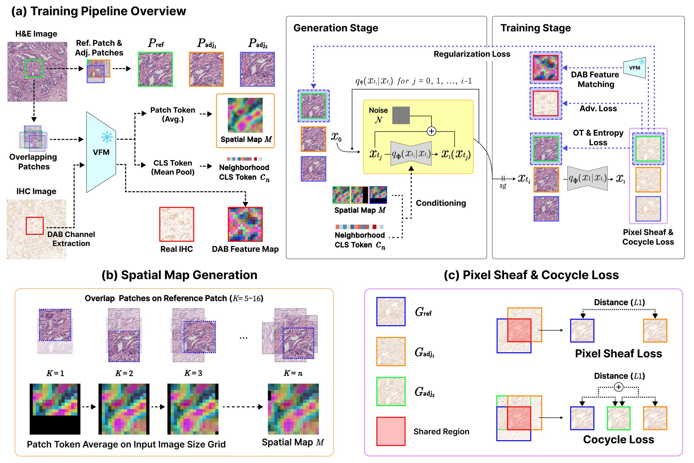
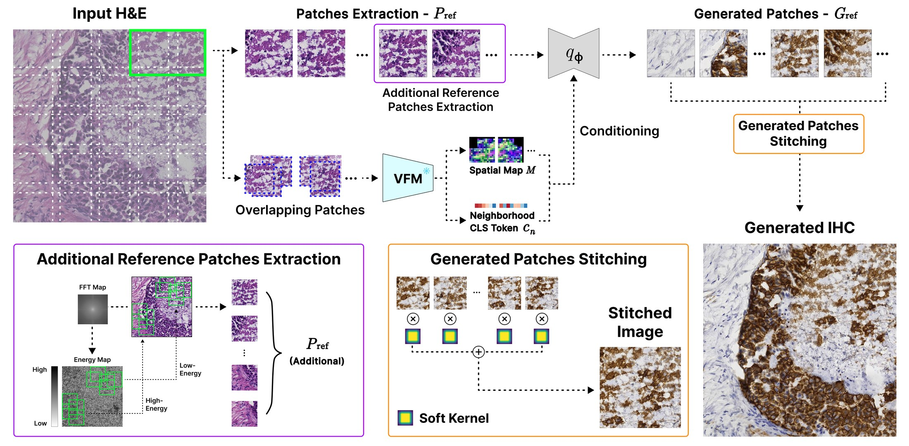
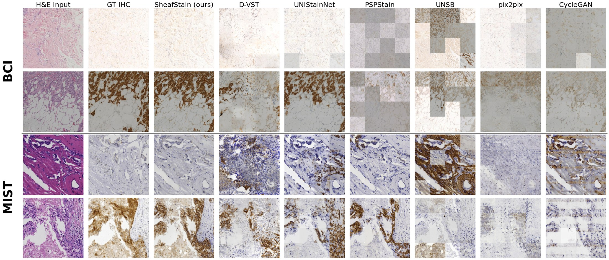

TL;DR
Virtual staining of gigapixel whole-slide images runs patch by patch, and independent patches fail to keep spatial continuity. Pathology VFMs offer rich representations, but their self-attention gives the same physical region inconsistent embeddings under different global contexts. We formalize this context contamination as a sheaf-theoretic problem and propose SheafStain, which integrates the VFM class and patch tokens into a Schrödinger bridge as sheaf-like sections. Evaluated on stitched 1024×1024 outputs across HER2, ER, PR and Ki-67, SheafStain shows promising results against six prior methods1,2,3,4,5,6 while mitigating patch-boundary stitching artifacts.
Motivation
An IHC stain can be applied to only one tissue section, so virtual staining predicts it from the H&E of the same tissue. Whole-slide images force this translation onto small patches, and each patch is produced without its neighbors. Reassembling the patches then shows three failures: patch-boundary discontinuities, stain-tone drift, and chromatin-distribution mismatch.
VFMs are a natural source of conditioning, but self-attention ties each region's embedding to its surrounding context. Viewed over overlapping patches, the embeddings form a presheaf whose sections disagree on overlaps, so no global section restricts to them. SheafStain treats the VFM features as sheaf-like sections and trains the generator to agree on the overlaps.
Method at a glance


Results
| Method | FID ↓ | KID×103 ↓ | LPIPS ↓ | DISTS ↓ | TS ↓ | DAB-r ↑ |
|---|---|---|---|---|---|---|
| SheafStain (ours) | 36.3626 | 4.2070 | 0.4689±0.0584 | 0.2132±0.0479 | 0.0146±0.0072 | 0.1209 |
| Pix2Pix1 | 172.7932 | 138.9050 | 0.4800±0.0722 | 0.2753±0.0698 | 0.0533±0.0214 | 0.0559 |
| CycleGAN2 | 96.3496 | 50.8020 | 0.5448±0.0659 | 0.2920±0.0599 | 0.0475±0.0262 | 0.0668 |
| PSPStain3 | 185.6991 | 173.7360 | 0.5695±0.0640 | 0.2924±0.0494 | 0.0885±0.0354 | 0.0317 |
| D-VST4 | 87.3100 | 62.7670 | 0.5107±0.0707 | 0.2570±0.0596 | 0.0164±0.0070 | 0.0736 |
| UNIStainNet5 | 67.6322 | 29.3000 | 0.4577±0.0711 | 0.2279±0.0531 | 0.0448±0.0320 | 0.1267 |
| UNSB6 | 227.7889 | 236.2310 | 0.6635±0.0677 | 0.3347±0.0452 | 0.1464±0.0161 | 0.0589 |
| Method | FID ↓ | KID×103 ↓ | LPIPS ↓ | DISTS ↓ | TS ↓ | DAB-r ↑ |
|---|---|---|---|---|---|---|
| SheafStain (ours) | 34.5080 | 2.2350 | 0.5196±0.0646 | 0.2056±0.0382 | 0.0292±0.0080 | 0.1187 |
| Pix2Pix1 | 186.3988 | 186.3800 | 0.5631±0.0619 | 0.3624±0.0685 | 0.0851±0.0196 | 0.0866 |
| CycleGAN2 | 95.9094 | 54.0670 | 0.5766±0.0548 | 0.2791±0.0454 | 0.0698±0.0110 | 0.0681 |
| PSPStain3 | 50.1078 | 10.6750 | 0.5371±0.0594 | 0.2466±0.0388 | 0.0763±0.0210 | 0.0841 |
| D-VST4 | 94.0706 | 65.4310 | 0.5578±0.0525 | 0.2613±0.0462 | 0.0336±0.0062 | 0.0356 |
| UNIStainNet5 | 101.7560 | 74.9900 | 0.5978±0.0617 | 0.3037±0.0796 | 0.1177±0.0257 | 0.0606 |
| UNSB6 | 57.9643 | 20.5260 | 0.5692±0.0640 | 0.2808±0.0547 | 0.1002±0.0307 | 0.0310 |
| Method | FID ↓ | KID×103 ↓ | LPIPS ↓ | DISTS ↓ | TS ↓ | DAB-r ↑ |
|---|---|---|---|---|---|---|
| SheafStain (ours) | 29.0824 | 2.5000 | 0.5042±0.0619 | 0.1934±0.0358 | 0.0292±0.0075 | 0.1248 |
| Pix2Pix1 | 208.5043 | 210.1640 | 0.5735±0.0657 | 0.4237±0.0815 | 0.0692±0.0259 | 0.0551 |
| CycleGAN2 | 67.1467 | 28.0530 | 0.5492±0.0549 | 0.2735±0.0616 | 0.0693±0.0228 | 0.0884 |
| PSPStain3 | 45.9200 | 16.0910 | 0.5235±0.0496 | 0.2534±0.0493 | 0.0752±0.0286 | 0.0906 |
| D-VST4 | 84.2247 | 65.3180 | 0.5518±0.0384 | 0.2598±0.0632 | 0.0310±0.0063 | 0.0554 |
| UNIStainNet5 | 74.8386 | 37.2410 | 0.5259±0.0550 | 0.2461±0.0541 | 0.0571±0.0112 | 0.0497 |
| UNSB6 | 49.2278 | 16.0520 | 0.5659±0.0545 | 0.2710±0.0606 | 0.0924±0.0279 | 0.0790 |
| Method | FID ↓ | KID×103 ↓ | LPIPS ↓ | DISTS ↓ | TS ↓ | DAB-r ↑ |
|---|---|---|---|---|---|---|
| SheafStain (ours) | 29.7240 | 2.1910 | 0.5017±0.0588 | 0.1962±0.0361 | 0.0272±0.0075 | 0.1184 |
| Pix2Pix1 | 210.9157 | 206.3250 | 0.5788±0.0639 | 0.4148±0.0754 | 0.0686±0.0331 | 0.0656 |
| CycleGAN2 | 140.6118 | 99.8560 | 0.5783±0.0474 | 0.3046±0.0621 | 0.1022±0.0238 | 0.0823 |
| PSPStain3 | 48.6565 | 19.2100 | 0.5447±0.0463 | 0.2744±0.0564 | 0.0797±0.0287 | 0.0905 |
| D-VST4 | 90.1997 | 67.5810 | 0.5566±0.0400 | 0.2650±0.0631 | 0.0308±0.0064 | 0.0502 |
| UNIStainNet5 | 91.2102 | 60.3800 | 0.5232±0.0729 | 0.3060±0.0916 | 0.0351±0.0059 | 0.0429 |
| UNSB6 | 54.2625 | 21.3240 | 0.5741±0.0594 | 0.2797±0.0639 | 0.0904±0.0368 | 0.0544 |
| Method | FID ↓ | KID×103 ↓ | LPIPS ↓ | DISTS ↓ | TS ↓ | DAB-r ↑ |
|---|---|---|---|---|---|---|
| SheafStain (ours) | 25.3978 | 3.9220 | 0.5269±0.0404 | 0.2124±0.0324 | 0.0261±0.0066 | 0.0493 |
| Pix2Pix1 | 253.8902 | 306.2140 | 0.5707±0.0371 | 0.3617±0.0422 | 0.0839±0.0180 | 0.0257 |
| CycleGAN2 | 74.4676 | 43.0280 | 0.5552±0.0433 | 0.2575±0.0408 | 0.0618±0.0164 | 0.0423 |
| PSPStain3 | 44.0905 | 15.9350 | 0.5442±0.0345 | 0.2618±0.0383 | 0.0710±0.0226 | 0.0340 |
| D-VST4 | 74.1956 | 54.2740 | 0.5587±0.0324 | 0.2414±0.0376 | 0.0282±0.0068 | 0.0235 |
| UNIStainNet5 | 62.7007 | 37.8290 | 0.5420±0.0359 | 0.2254±0.0361 | 0.0620±0.0209 | 0.0200 |
| UNSB6 | 38.1956 | 10.1780 | 0.5539±0.0351 | 0.2514±0.0397 | 0.0857±0.0225 | 0.0326 |
Best in bold, second best underlined. Mean ± standard deviation over test images for the per-image metrics.
TS is the Tiling Score9 at patch seams. DAB-r is the DAB Pearson correlation with the ground-truth IHC.

References (9)
- 1P. Isola, J.-Y. Zhu, T. Zhou, and A. A. Efros, Image-to-image translation with conditional adversarial networks, CVPR 2017.
- 2J.-Y. Zhu, T. Park, P. Isola, and A. A. Efros, Unpaired image-to-image translation using cycle-consistent adversarial networks, ICCV 2017.
- 3F. Chen, R. Zhang, B. Zheng, Y. Sun, J. He, and W. Qin, Pathological semantics-preserving learning for H&E-to-IHC virtual staining, MICCAI 2024.
- 4S. Yang, D. Wei, Y. Hu, Q. Peng, H. Liu, Y. Huang, X. Wu, Y. Zheng, and L. Wang, D-VST: Diffusion transformer for pathology-correct tone-controllable cross-dye virtual staining of whole slide images, NeurIPS 2025.
- 5J. R. Saurav, T. L. H. Pham, P. Mukherjee, P. Yi, B. A. Orr, and J. M. Luber, UNIStainNet: Foundation-model-guided virtual staining of H&E to IHC, arXiv preprint 2026. arXiv:2603.12716
- 6B. Kim, G. Kwon, K. Kim, and J. C. Ye, Unpaired image-to-image translation via neural Schrödinger bridge, ICLR 2024.
- 7S. Liu, C. Zhu, F. Xu, X. Jia, Z. Shi, and M. Jin, BCI: Breast cancer immunohistochemical image generation through pyramid pix2pix, CVPR Workshops 2022.
- 8F. Li, Z. Hu, W. Chen, and A. Kak, Adaptive supervised PatchNCE loss for learning H&E-to-IHC stain translation with inconsistent groundtruth image pairs, MICCAI 2023.
- 9O. Madar and O. Fried, Tiled Diffusion, CVPR 2025.
BibTeX
If you find our work useful, please cite it using the BibTeX below.
@inproceedings{lim2026sheafstain,
title = {SheafStain: Sheaf-Theoretic Schr\"odinger Bridge for Spatially and Biologically Coherent Virtual Staining},
author = {Lim, Hyeongyeol and Yoon, Hongjun and Jang, Eunjin and Jeong, Daeky and Cho, Won June and Lee, Hwamin},
booktitle = {The Fortieth Annual Conference on Neural Information Processing Systems},
year = {2026},
url = {https://arxiv.org/abs/2606.11846}
}